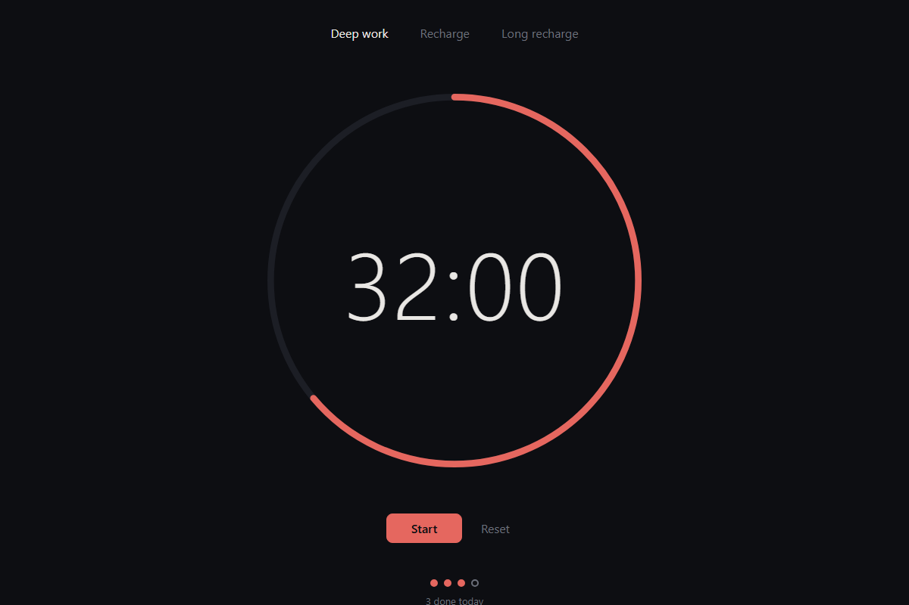
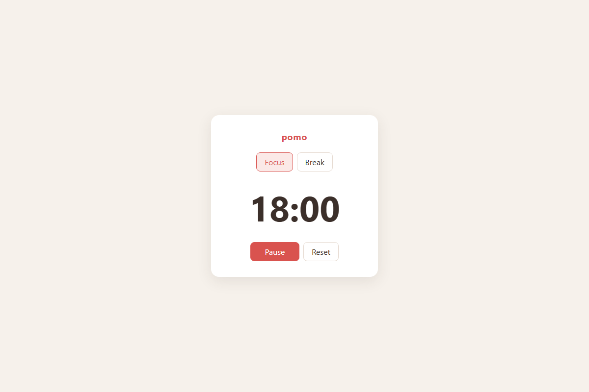
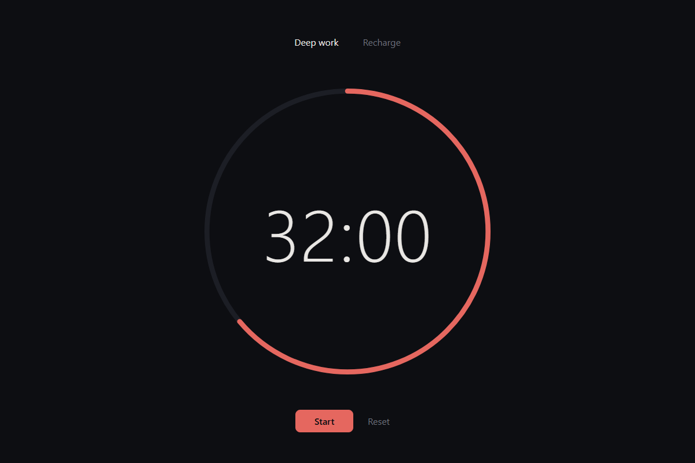
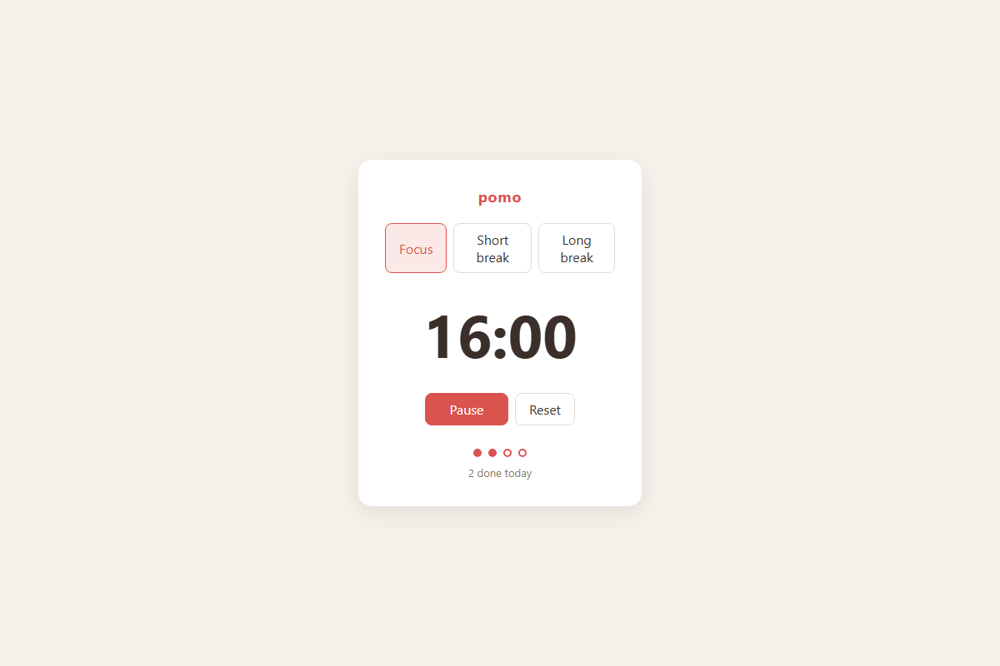

Make any repo yours. Keep getting upstream.
Your agent changes an open-source project however you want. xTend keeps merging upstream in, and when the two collide, it resolves them by what your changes were for.
npx github:Medalink/xtend get owner/repo
$ xtend sync
xtend: asking agent (claude), try 1/3
xtend: merged upstream, agent resolved: index.html, timer.js, ui.js
$ node test.js
ok
- 3 conflicted files resolved by intent
- Upstream's new tests pass on your redesign
- The next sync is a no-op

01 The hard case
You rewrote the app. Upstream rewrote it too.
The fork moved all of the DOM code from app.js into a new ui.js, restyled it and renamed the modes. Upstream then shipped a feature through app.js and renamed modes to presets. Git follows the move, then stops on 3 of 5 files, and the tests crash on conflict markers. Fixing that by hand means understanding both sides.
$ git merge upstream/main
Auto-merging index.html
CONFLICT (content): Merge conflict in index.html
Auto-merging test.js
Auto-merging timer.js
CONFLICT (content): Merge conflict in timer.js
Auto-merging ui.js
CONFLICT (content): Merge conflict in ui.js
Automatic merge failed; fix conflicts and then commit the result.
Recorded preimage for 'index.html'
Recorded preimage for 'timer.js'
Recorded preimage for 'ui.js'$ node test.js
~\you\pomo\timer.js:1
<<<<<<< HEAD
^^
SyntaxError: Unexpected token '<<'
at wrapSafe (node:internal/modules/cjs/loader:1861:18)
$ xtend sync
xtend: asking agent (claude), try 1/3
xtend: merged upstream, agent resolved: index.html, timer.js, ui.js$ node test.js
okWhat your one sentence did
index.htmlrewrittentest.jsrewrittentheme.cssaddedtimer.jsrewrittenapp.js→ui.jsmoved and rewritten
Kept from you
- "Deep work" is 50 minutes, "Recharge" is 10
- Dark full-screen layout with the SVG progress ring
- Space, R, 1 and 2 still work
app.jsstays gone. Upstream's changes to it landed inui.js
Kept from upstream
- A long break after every 4th session (
nextPreset) - Session dots and the "done today" count
- The chime when a session ends
Intent, not lines
Each customization is a commit whose message says what you wanted. The agent reads those, so it rebuilds "dark, ring, 50 minutes" on top of the new code instead of picking hunks.
Both test suites decide
Upstream's tests came with the merge. xTend runs your check after every attempt and sends the failures back to the agent. Nothing is committed until it passes.
Or nothing changes
If three tries don't produce a clean, passing tree, xTend puts everything back as it was and exits non-zero. A failed sync never leaves a half-merge behind.
02 Screens
Four states of one app. Click any to run it.

Upstream, the day you fork it. Yoursopen
One sentence to your agent: dark, ring, 50 minutes, shortcuts, new file layout. pomo 2.0open
Upstream ships long breaks, session dots and a chime, and renames modes to presets. Yours + 2.0open Afterxtend sync. Your design, their features, both test suites green.
03 How it works
Four commands. Tools you already have.
xtend get owner/repoForks it on GitHub, clones it and writes the ref sheet. It also turns on a daily Action that runs xtend sync for you.
xtend "make it dark"Your agent makes the change with the ref sheet in hand. Your check has to pass, and the commit message keeps what you asked for.
xtend syncMerges upstream with git. When git can't finish, the agent does, guided by your intent. It retries until the check passes, or nothing changes.
xtend sheetReads the code and writes a short map for agents: layout, commands, where to extend, and which files churn.
- Storage
- Your GitHub fork. No service, no database, no account.
- Merging
git merge, withrerereon- Intent
- Your commit messages
- Agent
claude -p,codex exec, or anything inXTEND_AGENT- Gate
- Your
checkcommand, such asnpm test - Size
- One file, no dependencies
04 Owners
Nothing to maintain. One file if you want.
Your project works with xTend as it is. To help people who extend it, run xtend sheet once and commit XTEND.md. It works like a spec sheet instead of an MCP server: every agent reads it before every change and every merge.
# pomo
## What it is
A Pomodoro timer in the browser: static HTML, CSS and plain JavaScript, with no build step and no dependencies.
`timer.js` holds the pure timer logic and also runs under Node for tests. `app.js` connects that logic to the DOM.
## Map
- `index.html`: the page markup. Mode tabs (`[data-mode]`), `#time`, `#start`, `#reset`. Loads `timer.js` and then `app.js`.
- `timer.js`: the pure logic. `MODES`, `createTimer(mode)`, `tick(t)`, `format(seconds)`. Exports through `module.exports` only when `module` exists.
- `app.js`: browser glue. Module-level state (`timer`, `interval`), plus `render()`, `setMode()`, `toggle()`, `step()` and the event wiring.
- `style.css`: all styles. Classes: `.card`, `.tabs`, `.time`, `.controls`, `.primary`, `.active`.
- `test.js`: plain `node:assert/strict` assertions against `timer.js`. Prints `ok` on success.
- `package.json`: private, no dependencies, one script: `test`.
## Build, run, test
- Build: none. The source files are what ships.
- Run: open `index.html` in a browser, or serve the folder with `npx serve .` or `python -m http.server 8000`.
- Test: `npm test` (same as `node test.js`). It exits non-zero on the first failed assertion and prints `ok` when everything passes.
- No linter, formatter or CI config exists in the repo.
## Extension points
- **New timer mode** (for example a long break):
1. Add an entry to `MODES` in `timer.js`: `long: { label: 'Long', minutes: 15 }`.
2. Add a tab to `nav.tabs` in `index.html`: `<button data-mode="long">Long</button>`. `app.js` finds tabs by `[data-mode]`, so it needs no change.
3. If the new mode should be part of the automatic cycle, edit the transition in `step()` in `app.js` (`timer.mode === 'focus' ? 'break' : 'focus'`).
4. Add a `createTimer('long')` assertion to `test.js`.
- **Change durations**: edit `minutes` in `MODES` in `timer.js`. Tests derive the expected values from `MODES`, so they keep passing.
- **New pure logic** (session counter, next-mode rule, formatting): add a function to `timer.js`, add it to the `module.exports` object on the last line, and assert it in `test.js`. It is then available as a global in the browser too.
- **New control button**: add markup in `.controls` in `index.html`. Wire it in `app.js` next to the existing `$('reset').addEventListener(...)`. Any visible text it changes goes in `render()`.
- **Things that happen when a timer finishes** (sound, notification): put them in `step()` inside the `if (timer.done)` branch, before `setMode(...)`.
- **Persistence (localStorage)**: read the saved value where `let timer = createTimer('focus')` starts `app.js`, and write it in `render()`. Keep storage out of `timer.js` so it stays testable in Node.
- **Styling and themes**: `style.css`. The accent color `#d9534f` appears in `h1`, `.tabs button.active` and `.primary`. To theme it, turn it into a CSS custom property first.
## Conventions
- Plain ES2015+ scripts with no modules, bundler or framework. The files share globals, so each new top-level name must be unique across `timer.js` and `app.js`.
- Script order matters: `timer.js` must load before `app.js` in `index.html`.
- Keep `timer.js` free of the DOM and of timers, and make it immutable: functions return new objects (`{ ...t, remaining }`) and never mutate. `tick` returns the same object when nothing changes (the test checks this with `assert.equal(tick(t), t)`).
- Timer state shape: `{ mode, remaining, running, done }`, with `remaining` in seconds.
- `app.js` reassigns `timer` as a whole and then calls `render()`. `render()` is the only function that writes to the DOM.
- Use `$(id)` for lookups by id, `data-mode` for mode tabs, and the `.active` class for selected state.
- Style: two-space indent, no semicolons, single quotes, template literals for interpolation, `const`/`let` (never `var`), camelCase names, short functions.
- CSS: one flat stylesheet with simple class selectors and short rules on one line. Use `font-variant-numeric: tabular-nums` for digits.
- Tests: add top-level `assert.*` calls to `test.js` and keep `console.log('ok')` as the last line.
## Hot zones
The history is a single commit (`3d435cd pomo 1.0`) that touched every file, so it gives no churn data. The files below are hot zones because of their structure.
- `timer.js`: `MODES`, the `createTimer` and `tick` signatures, and the `module.exports` line. Add to it rather than editing it, and keep local modes as extra `MODES` keys.
- `app.js`: `step()` (the mode transition) and `render()`. Put local behavior in small named functions and call them from these with a single line, so upstream edits merge cleanly.
- `index.html`: the `<script>` tags and the `.tabs` / `.controls` blocks. Add elements, and don't reorder or rename the existing ids (`time`, `start`, `reset`).
- `style.css`: append local rules at the end instead of editing existing ones.
- `test.js`: append new assertions after the existing ones and before `console.log('ok')`.
05 Run log
Every step, unedited. 5m 32s end to end.
This is real output from demo/run.mjs, with the real agent (claude -p). Run it yourself with node demo/run.mjs.
01
owner
The owner writes a ref sheet once xtend sheet
ok
40.8s
$ xtend sheet
xtend: asking agent (claude), try 1/3
xtend: wrote XTEND.md
02
you
You take your own copy xtend get ~\pomo
ok
2.2s
$ xtend get ~\pomo
xtend: upstream ships XTEND.md, using it
xtend: ready in ./pomo. Try: cd pomo && xtend "describe a change"
03
you
You make it yours xtend "Redesign pomo into a dark, distraction-free focus ..."
ok
3m 2s
$ xtend "Redesign pomo into a dark, distraction-free focus app. Replace the light card with a full-screen dark layout and a large circular SVG progress ring around the time. Rename the modes to "Deep work" (50 minutes) and "Recharge" (10 minutes). Add keyboard shortcuts: Space starts or pauses, R resets, 1 and 2 switch modes. Move all DOM and rendering code out of app.js into a new ui.js and delete app.js."
xtend: asking agent (claude), try 1/3
xtend: committed
04
you
What plain git does with it git merge upstream/main
exit 1
0.5s
$ git merge upstream/main
Auto-merging index.html
CONFLICT (content): Merge conflict in index.html
Auto-merging test.js
Auto-merging timer.js
CONFLICT (content): Merge conflict in timer.js
Auto-merging ui.js
CONFLICT (content): Merge conflict in ui.js
Automatic merge failed; fix conflicts and then commit the result.
Recorded preimage for 'index.html'
Recorded preimage for 'timer.js'
Recorded preimage for 'ui.js'
05
you
And the tests after it node test.js
exit 1
0.1s
$ node test.js
~\you\pomo\timer.js:1
<<<<<<< HEAD
^^
SyntaxError: Unexpected token '<<'
at wrapSafe (node:internal/modules/cjs/loader:1861:18)
at Module._compile (node:internal/modules/cjs/loader:1903:20)
at Object..js (node:internal/modules/cjs/loader:2060:10)
at Module.load (node:internal/modules/cjs/loader:1651:32)
at Module._load (node:internal/modules/cjs/loader:1443:12)
at wrapModuleLoad (node:internal/modules/cjs/loader:261:19)
at Module.require (node:internal/modules/cjs/loader:1674:12)
at require (node:internal/modules/helpers:157:16)
at Object.<anonymous> (~\you\pomo\test.js:2:85)
at Module._compile (node:internal/modules/cjs/loader:1929:14)
Node.js v24.22.1
06
you
xtend merges it for you xtend sync
ok
1m 46s
$ xtend sync
xtend: asking agent (claude), try 1/3
xtend: merged upstream, agent resolved: index.html, timer.js, ui.js
07
you
Upstream tests and yours, on the merged code node test.js
ok
0s
$ node test.js
ok
08
you
And again tomorrow xtend sync
ok
0.3s
$ xtend sync
xtend: already up to date
Fork less. Extend more.
From an idea by Thariq: modify software with agents and get upstream merged in automatically.